HealthAsyst
Clinic Management System
One clinic, many roles: quick insights shaped for each, with every report close at hand.

Design process
Most people only ever opened the reports. So before designing anything new, we sorted out who needed what, and what only needed fixing.
-
1
Requirement gathering
I gathered requirements with stakeholders and the people already using the app.
Most users only opened the reports. Only a few admins used their own personal dashboards.
So I split the requirements into two broad segments: what belongs in the new experience, and what is a refinement of the old one.
- New experience
- Refinement of the old
-
2
Mapping every use case
We laid out every possible use case of the app on a whiteboard, with sticky notes.
In the session with me were the Product Owner, a Senior Admin and a Front-Desk Manager.
- Product Owner
- Senior Admin
- Front-Desk Manager
-
3
Choosing the roles
With every use case on the board, we decided at a broad level which roles the app would cater to.
Then we quickly moved the stickies to line up under each role.
-
4
Information architecture and sitemap
We plotted the information architecture over several iterations, and it settled into three areas.
- Analytics
- Quick insights into each area of clinic management.
- Reports
- The historical data saved for every one of those data points.
- Web Connect
- Super-Admin only. Connects the clinic to its various data sources.
Web Connect is a specific tool for connecting data points to their sources through API connections, so only the Super-Admin needs it. Once we knew how information should be segmented and flow through the app, we narrowed the sitemap down from it.
-
5
Role-based access and handoffs
With the roles agreed, we mapped which features each role can access.
We also marked the handoff points, where a workflow passes from one persona to the next.
-
6
KPIs and a dashboard for each persona
We predicted the KPIs each persona cares about, and what the best dashboard for each of them would look like.
For each of those dashboards, we also defined the customisation options.
-
7
Narrowing the insights
With the app's segments and sitemap settled, we narrowed down the insights.
-
8
A grayscale proof of concept
We built the whole app in grayscale first, as a proof of concept.
By this stage the sitemap was fully refined. The design system and colour palette did not exist yet, so every screen was judged on structure and flow alone.
-
9
A palette and a bare-minimum design system
Then we created the colour palette and a bare-minimum design system for HealthAsyst's modern UI.
HealthAsyst did not want to depend on any external design system, so we started fresh, with just enough foundation to build on: one typeface, a teal-led palette, one icon set with a fixed colour and size for every state, and a 4 pt spacing grid.
Typography · Lato
AaAaAaAa50 ptBold30 ptRegular16 ptRegular12 ptRegularSpacing · 4 pt grid
Eight steps, every one a multiple of 4. Padding, gaps and icon sizes all snap to them.
Colour
- Primary teal#027C6B
- Secondary teal#22A08E
- #5AD4AF
- #41E4DB
- #6ACCEB
- #1C76FD
- #902CDE
- #FF5556
- #F5AF8E
- #FEE792
Chart palette
- Up
- Down
- No change
Iconography
Filled
On solid surfaces and charts
- Dashboard
- General
- Operations
- Payments
- Comms
- Preferences
- Share
- Collapse
- Date range
Line
Everywhere else

View report
Export
Compare
Filter
Composition
Trend chart
Edit
Reorder
In a hospital, quick recognition matters more than fine-line elegance, which favours filled icons. But an app built from the ground up also had to feel upmarket. So filled icons carry emphasis on solid surfaces and charts, and line icons keep everything else light: a small trade of consistency for balance.